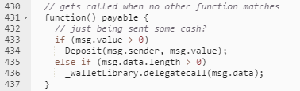
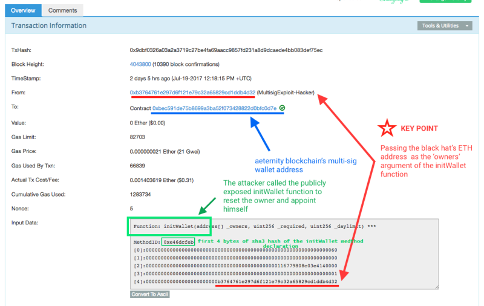
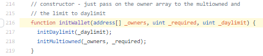
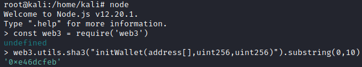
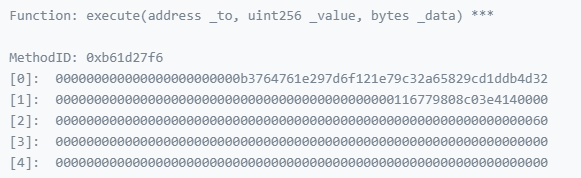

Attack Transactions
Attack Transactions Explained
HOW THE FIRST TRANSACTION IS BEEN POSSIBLE(see
below):
Because The wallet contract forwards all unmatched function calls to the library using a
Delegate Call, in
line
424 of Wallet: https://etherscan.io/address/0x863df6bfa4469f3ead0be8f9f2aae51c91a907b4#code
 the code logic states that if there is
data within the transaction which length is greater than 0 a delegate call is made which calls the wallet library in
the context of the
Calling Contract.
This causes all public functions from the library to be callable by
anyone, including
initWallet, which can change the contract’s owners. Unfortunately,
initWallet has no checks to prevent an attacker from calling it after the contract was
initialized
FIRST TRANSACTION: The attacker first has
obtained exclusive ownership of the MultiSig wallet(0xbec591de75b8699a3ba52f073428822d0bfc0d7e), via the public
initialization function(initwallet).
The transaction found at the following link:
https://etherscan.io/tx/0x9dbf0326a03a2a3719c27be4fa69aacc9857fd231a8d9dcaede4bb083def75ec
click the “click to see more” and check “imput data” that show a transaction with a call to the initWallet function.
This call overwrote the owners of the contract with the
attacker’s address at
[4] within the input data section.
 •
To calculate the MethodID
(0xe46dcfeb) come from by hashing the function “
initWallet(address[],uint256,uint256)” with keccak-256. Note that the function to
hash is without the variable names and spaces of the original one.
It is the fist 4 byte of the hexadecimal
value created (0x + 4 Byte), considering that each 2 digits of a hexadeciaml number is 1 Byte.
We can
calculate it by:
◇ node commands on Linux(
web3.utils.sha3
is an alias for keccak-256):
$ node
> const web3 = require('web3')
> web3.utils.sha3("initWallet(address[],uint256,uint256)").substring(0,10)
 ◇ use an
online Tool and then take the first 4 Bytes(8
digits)
•
Five 32-byte values (0,1,2,3,4)
◇ [0] Offset to
the
address[] _owners array, point to the 96th (0x60) Byte. If you look at the 96th byte, it is the
beginning of our array.
The first 32 bytes [3] is the length (0x01), followed by the
attacker address on line [4]
◇ [1]
uint256 _required are many
owners are needed (Zero)
◇ [2]
uint256 _daylimit is the daily spending limit of the contract (A
Large Number)
◇ [3]
address[] _owners array length: 1
◇ [4]
Attacker address valueSECOND
TRANSACTION: transferred “daily spending limit of the contract” (
uint256 _value) that we have
set before with the first transaction to the
attacker address
(
address _to)
The transaction can be found to the following location:
https://etherscan.io/tx/0xeef10fc5170f669b86c4cd0444882a96087221325f8bf2f55d6188633aa7be7c
 This execution was automatically
authorized, since the attacker was then the only owner of the multisig, effectively draining the contract of all its
funds.
Bibliography:
•
https://blog.trailofbits.com/2018/09/05/contract-upgrade-anti-patterns/•
http://console-cowboys.blogspot.com/2020/10/smart-contract-hacking-chapter-7.html•
https://blog.openzeppelin.com/on-the-parity-wallet-multisig-hack-405a8c12e8f7/•
https://medium.com/@raulk/dissecting-the-two-malicious-ethereum-messages-that-cost-30m-but-couldve-cost-100m-155e023a9500